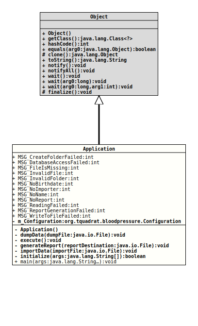

java.lang.Object
org.tquadrat.bloodpressure.Application
@ProgramClass
@ClassVersion(sourceVersion="$Id: Application.java 151 2022-03-15 20:39:31Z tquadrat $")
@API(status=STABLE,
since="0.0.1")
public final class Application
extends Object
The main entry point into the Blood Pressure Statistics Application.
- Author:
- Thomas Thrien (thomas.thrien@tquadrat.org)
- Version:
- $Id: Application.java 151 2022-03-15 20:39:31Z tquadrat $
- Since:
- 0.0.1
- UML Diagram
-

UML Diagram for "org.tquadrat.bloodpressure.Application"
{kind=link}
-
Field Summary
FieldsModifier and TypeFieldDescriptionprivate final ConfigurationThe configuration for this application.static final intMessage: An attempt to create a folder failed.static final intMessage: An attempt to perform a database operation failed.static final intMessage: Import file is missing.static final intMessage: File is invalid.static final intMessage: Folder is invalid.static final intMessage: Birthdate is missing.static final intMessage: Importer is missing.static final intMessage: Name is missing.static final intMessage: No report.static final intMessage: Reading failed.static final intMessage: Report generation failed.static final intMessage: Writing to file failed. -
Constructor Summary
Constructors -
Method Summary
Modifier and TypeMethodDescriptionprivate final voidDumps the data from the database to the given file.private final voidexecute()Does the programs work.private final voidgenerateReport(File reportDestination) Generates a report and writes it to the given destination.private final voidimportData(File importFile) Imports the contents of the given file.private final booleaninitialize(String[] args) Initialises the application.static final voidThe program entry point.
-
Field Details
-
MSG_CreateFolderFailed
Message: An attempt to create a folder failed.- See Also:
-
MSG_DatabaseAccessFailed
Message: An attempt to perform a database operation failed.- See Also:
-
MSG_FileIsMissing
Message: Import file is missing.- See Also:
-
MSG_InvalidFile
Message: File is invalid.- See Also:
-
MSG_InvalidFolder
Message: Folder is invalid.- See Also:
-
MSG_NoBirthdate
Message: Birthdate is missing.- See Also:
-
MSG_NoImporter
Message: Importer is missing.- See Also:
-
MSG_NoName
Message: Name is missing.- See Also:
-
MSG_NoReport
Message: No report.- See Also:
-
MSG_ReadingFailed
Message: Reading failed.- See Also:
-
MSG_ReportGenerationFailed
Message: Report generation failed.- See Also:
-
MSG_WriteToFileFailed
Message: Writing to file failed.- See Also:
-
m_Configuration
The configuration for this application.
-
-
Constructor Details
-
Application
private Application()Creates a new instance forApplication.
-
-
Method Details
-
dumpData
Dumps the data from the database to the given file.- Parameters:
dumpFile- The destination for the data.
-
execute
Does the programs work.- Throws:
IOException- An I/O issue occurred.
-
generateReport
Generates a report and writes it to the given destination. Whether this destination denotes a folder or a file depends on the
ReportFormat.Not all formats are defined for all report styles.
- Parameters:
reportDestination- The destination for the generated report.- See Also:
-
importData
Imports the contents of the given file.- Parameters:
importFile- The file to import.
-
initialize
Initialises the application.- Parameters:
args- The command line arguments.- Returns:
trueif the initialisation was successful and the application may proceed,falseif it failed and the application needs to terminate.- Throws:
IOException- An I/O issue occurred.SQLException- A problem occurred when initialising the database.
-
main
The program entry point.- Parameters:
args- The command line arguments.
-